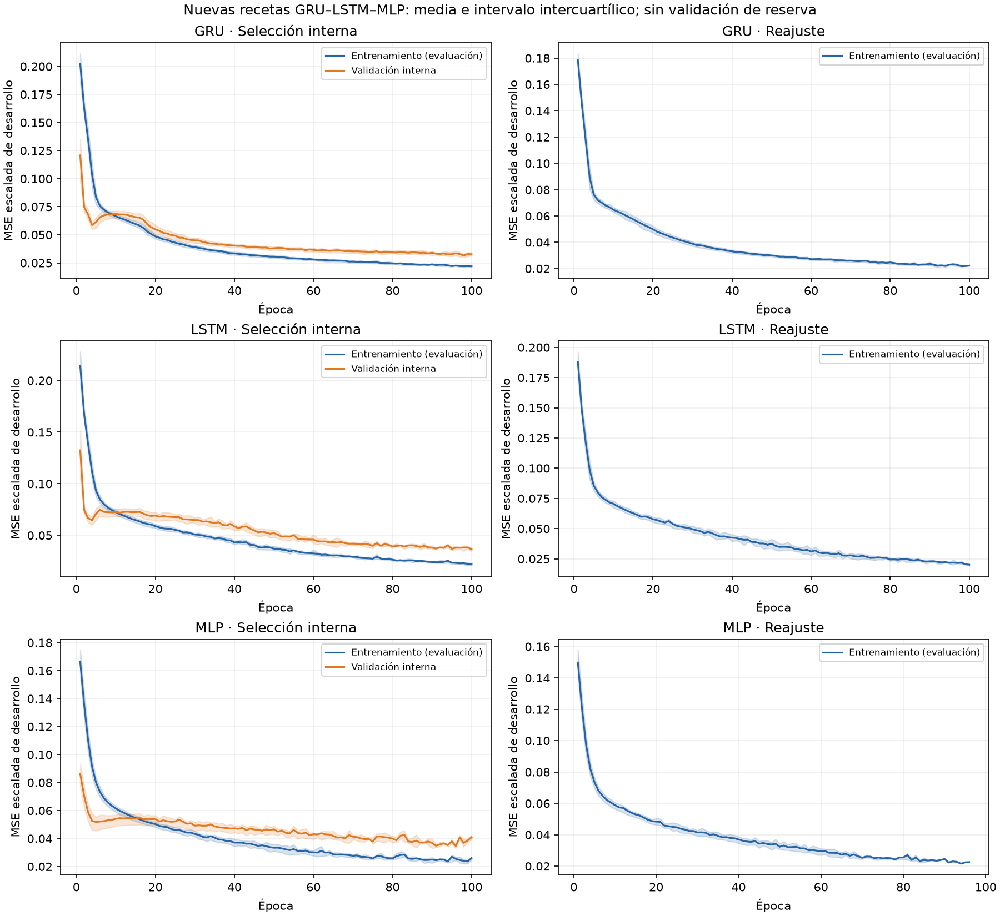

10. Estudio complementario del núcleo en sesenta días#
Alcance complementario. La nueva comparación principal de E1 conserva GRU32, LSTM32 y MLP16 en las 608 fechas del 01/01/2025–31/08/2026, con HPO equitativo, piloto propio y R=309 según el capítulo 11. El capítulo 5 mantiene las diez semillas originales. Este capítulo preserva la ejecución GRU16–LSTM16–MLP32, sus 465 semillas por familia y su evaluación de sesenta fechas. Sus pesos, métricas, curvas y dimensionamiento pertenecen exclusivamente a este estudio complementario.
La selección vigente de E1 reúne LSTM, MLP y GRU. En los diez experimentos cripto con reporte suficiente del corpus conciliado aparecen, respectivamente, en 10, 4 y 2; TCN aparece en uno y se conserva como comparación complementaria. La decisión bibliográfica combina esta recurrencia con arquitecturas básicas: una capa oculta densa y dos celdas recurrentes de una capa. El número de parámetros se comprueba para cada receta; no se deduce simplicidad solamente del nombre de la familia.
Este estudio realizó una ejecución nueva y coherente de las tres redes. Los resultados de MLP no se mezclaron con las repeticiones de GRU/LSTM del capítulo 9. La decisión posterior de priorizar el benchmark de 608 días conserva esta comparación completa, incluidos sus resultados adversos e inconclusos.
Diseño de la nueva ejecución#
El diseño mantiene Bitcoin BTCUSDT, cinco covariables OHLCV diarias, D=7, n=7 y horizonte de un día. Conserva las funciones de preparación causal, la purga, el objetivo poblacional sin anualizar y el esquema forward chaining documentados en el libro. El periodo de desarrollo es 2023–2024.
Elemento |
Procedimiento común |
|---|---|
HPO |
Ocho candidatos por familia, semillas 6101–6102, diez bloques de enero–octubre de 2024 |
Selección |
Menor media del RMSE sobre 305 fechas concatenadas; desempate a tolerancia 10⁻¹² por parámetros y luego identificador |
Piloto |
Diez semillas nuevas, 7101–7110, sobre 01/11–30/12/2024; recetas fijas |
Dimensionamiento |
t no central, α*=0,05/3, potencia marginal objetivo 0,80 y cota simultánea del 80 % de la DE pareada |
Repeticiones |
Máximo entre 465 y el R requerido por los tres pares del nuevo piloto; sin detener por significación |
Baseline |
Mejor receta de desarrollo entre las tres familias, congelada antes de la evaluación |
Evaluación histórica |
01/09–30/10/2026, sesenta fechas; contexto de agosto; pesos fijos |
GRU y LSTM exploran 16/32 unidades; MLP explora 32/128 unidades. Las tres familias cruzan esos dos anchos con LR 0,001/0,003 y dropout 0/0,1. Cada una recibe 160 segmentos de validación y 320 etapas de ajuste; el HPO completo comprende 960 etapas. El esfuerzo de búsqueda es el mismo, aunque el coste computacional y los parámetros sean distintos.
MLP aplana la ventana ordenada de 7×5 covariables, aplica una capa densa con ReLU, dropout y una salida Softplus. Sus anchos candidatos tienen 1.185 y 4.737 parámetros. Los comparadores feedforward de la literatura motivan la familia y su baja profundidad; la entrada OHLCV, el escalado, los anchos y la salida positiva son adaptaciones explícitas del proyecto, no una reproducción exacta de aquellos artículos.
El margen conservado es δ=0,00025772842664981106. Procede del 5 % del RMSE CV del GRU inicial y mantiene su interpretación normativa de comparación académica. No se redefine a partir de los nuevos resultados ni se interpreta como rentabilidad o equivalencia.
HPO ejecutado y recetas seleccionadas#
El HPO cerró 48 trayectorias, 480 bloques mensuales y 960 etapas de ajuste, con 305 fechas por trayectoria. Las recetas se congelaron el 07/11/2026 a las 23:55:10 UTC, antes del piloto.
Familia |
Receta seleccionada por desarrollo |
Parámetros |
RMSE CV, media ± DE de dos semillas |
|---|---|---|---|
GRU |
Una capa, 16 unidades, LR 0,003, dropout 0,1 |
1.121 |
0,00513620 ± 0,00003068 |
MLP |
Una capa oculta, 32 unidades, LR 0,003, dropout 0,1 |
1.185 |
0,00527943 ± 0,00003534 |
LSTM |
Una capa, 16 unidades, LR 0,003, dropout 0 |
1.489 |
0,00626389 ± 0,00021402 |
El baseline de esta ejecución es GRU/D7-c03, elegido por el menor RMSE medio de desarrollo. La MLP de 32 unidades es la receta nueva: no se le atribuyen los 593 parámetros o las puntuaciones de la MLP histórica de 16 unidades. Las dos semillas de selección no constituyen el número de repeticiones de evaluación ni un intervalo de incertidumbre temporal.
Piloto ejecutado y dimensionamiento publicado#
El piloto completó 30 trayectorias y 60 etapas con las recetas congeladas y semillas 7101–7110. Cerró el 07/11/2026 a las 23:56:49 UTC. Cada ajuste utilizó 648 ejemplos permitidos, con 558 de subentrenamiento y 83 de validación interna; sus sesenta fechas de evaluación son comunes a las tres redes.
Par |
DE pareada del piloto |
Cota superior simultánea 80 % |
R requerido con la cota |
Potencia planificada a R=465 |
MDE a R=465 |
|---|---|---|---|---|---|
GRU–LSTM |
0,000862848 |
0,001356311 |
293 |
0,954577 |
0,000204142 |
GRU–MLP |
0,000464106 |
0,000729529 |
87 |
0,99999990 |
0,000109803 |
LSTM–MLP |
0,000917423 |
0,001442098 |
331 |
0,926184 |
0,000217054 |
El máximo requerido es 331. La regla prefijada produce R final=465, semillas 8101–8565, para un total de 1.395 trayectorias y 2.790 etapas definitivas. El piso conservador estaba en el diseño previo; no sustituye al cálculo nuevo ni se escogió según la evaluación.
El plan exacto y sus métricas de origen se publicaron y verificaron por GET a las 23:58:35 UTC, antes de iniciar los ajustes definitivos. El SHA-256 del JSON es 5c1ce3d67c72def7c337b92d846df9ea5589bc6f42802ed000dc0144b390568b. Una revisión numérica independiente con t no central de statsmodels confirmó los tres tamaños y sus extremos enteros.
Estos valores son planificación marginal entre semillas, condicionada a normalidad y transferencia de dispersión del piloto. La alternativa de potencia es una diferencia δ frente a cero; acreditar una mejora superior al margen exige además el intervalo correspondiente. No demuestran potencia temporal del 80 %, potencia conjunta del 80 % o potencia alcanzada. Los contrastes y sensibilidades conservan su procedimiento aunque la evaluación resulte adversa.
Entrenamiento y análisis fijados#
Se utiliza AdamW, batch 32, decaimiento 0,0001, clipping 1, máximo de cien épocas, paciencia 12 y mejora mínima 0,00001. La validación interna causal elige duración; sus pesos se descartan y el reajuste comienza desde cero con la semilla de etapa más 10.000.000. Cada ajuste definitivo dispone de 709 ejemplos, con 619 de subentrenamiento y 83 de validación interna. Los trabajadores y el proceso de puntuación verifican algoritmos deterministas, float32 y un hilo intra/interoperación; el proceso de registro sólo recoge metadatos.
El análisis principal compara los tres pares del núcleo con t pareada, Holm-3, IC marginales y familiares, efecto d_z y sensibilidad bootstrap entre semillas. Shapiro–Wilk diagnostica las diferencias; no selecciona la prueba más favorable. Las seis métricas se calculan en la escala original tras invertir las transformaciones aprendidas del entrenamiento.
El análisis temporal secundario conserva los tres pares neuronales y los tres frente a persistencia: DM con HAC de seis rezagos, corrección HLN y Holm-6. Su pérdida es la MSE diaria media de los modelos individuales, no el error de un ensemble. El bootstrap circular usa 4.999 remuestras comunes de fechas, bloque principal siete y sensibilidad tres/catorce. Conserva la media de RMSE individuales como estimando y distingue IC marginales de los familiares de seis pares.
BDS de dimensión dos y radio 1,5 DE, y Ljung–Box en rezagos uno/cinco, se aplican como diagnósticos exploratorios por semilla. Se conserva Holm por familia de diagnósticos y los casos indefinidos, sin interpretar rechazo como una ganancia no lineal demostrada. Las pruebas entre inicializaciones y las temporales responden a preguntas diferentes.
Cronología y alcance#
El código y diseño se publicaron y comprobaron mediante GET de GitHub el 07/11/2026 a las 23:39:42 UTC. El registro nuevo se cerró a las 23:40:09 UTC, con cero ajustes previos. El resultado del piloto y su dimensionamiento deben publicarse antes de los ajustes definitivos. El cierre de todos los pesos y preprocesadores debe preceder a la carga y puntuación de los datos de evaluación. Cada fase conserva firmas, semillas, versiones y fechas; los fallos no autorizan sustituir semillas o modificar silenciosamente el diseño.
Septiembre–octubre de 2026 ya fue evaluado en el proyecto. Esta extensión es una comparación histórica exploratoria, aunque su procedimiento se registre antes de sus propios ajustes. No convierte ese calendario en una reserva independiente para una hipótesis nueva. La repetición entre semillas caracteriza aleatoriedad de entrenamiento; no aporta cientos de periodos de mercado independientes.
Se publican agregados, métricas por semilla, configuraciones, manifiestos y curvas de aprendizaje. Las observaciones de mercado, predicciones diarias, escaladores y checkpoints permanecen fuera de los paquetes públicos. La construcción del libro consume artefactos guardados y no entrena redes.
Cierre efectivo y procedencia#
La ejecución completó 3.810 etapas nuevas: 960 de HPO, 60 de piloto y 2.790 definitivas. Se cerraron 1.395 modelos, 465 por familia, antes de puntuar. Los 32 ZIP recuperados mediante el cuaderno de adquisición coinciden con los hashes del manifiesto original: 6.200.358 bytes de archivos. La verificación previa de bytes no interpretó filas CSV ni calculó objetivos.
Evento verificado |
Fecha y hora UTC |
|---|---|
Fuente publicada y observada |
07/11/2026 23:39:42 |
Registro nuevo |
07/11/2026 23:40:09 |
Recetas seleccionadas |
07/11/2026 23:55:10 |
Piloto completo |
07/11/2026 23:56:49 |
Plan publicado y observado |
07/11/2026 23:58:35 |
Plan registrado / inicio de ajustes definitivos |
07/11/2026 23:59:05 / 23:59:09 |
Todos los pesos y preprocesadores congelados |
08/11/2026 00:13:36 |
Puerta de acceso a las observaciones |
08/11/2026 00:14:09 |
Evaluación completa |
08/11/2026 00:14:18 |
Análisis cerrado |
08/11/2026 00:14:48 |
La cronología completa, el registro de publicación del plan y el manifiesto de fuentes conservan tiempos, commits y firmas. La evaluación hizo una pasada por checkpoint, con 83.700 predicciones neuronales y las mismas sesenta fechas para todas las ejecuciones. Persistencia es una sola referencia determinista.
Curvas públicas de las recetas definitivas#
Se conservan 44.201 registros observados de pérdida, con entrenamiento y validación interna durante la selección de duración, y entrenamiento durante el reajuste. La pérdida está en escala normalizada de desarrollo; las métricas posteriores usan unidades originales de σ₇.

Modelo |
Trayectorias |
Época elegida: mediana [mín.; máx.] |
Curvas internas que llegan a época 100 |
|---|---|---|---|
GRU |
465 |
4 [3; 100] |
11 |
LSTM |
465 |
4 [2; 100] |
7 |
MLP |
465 |
6 [2; 96] |
3 |
La composición de la media cambia con la época. Las colas de la figura sólo reúnen las trayectorias que siguen activas; no representan una corrida típica de cien épocas. La mediana de duración es cuatro/seis épocas. El reajuste empieza de nuevo con la duración seleccionada y no usa validación sobre la evaluación histórica. La pérdida en modo entrenamiento puede diferir de la calculada en modo evaluación por dropout.
Los valores por corrida y época y el resumen con número de curvas disponibles permiten reconstruir la figura y examinar semillas concretas. Son las curvas de esta ejecución nueva, separadas de la reproducción del capítulo 9.
Métricas de la evaluación histórica común#
Las redes resumen 465 semillas por modelo sobre el 01/09–30/10/2026. Se puntúa cada trayectoria completa y después se agregan sus métricas; no se calcula el error de un ensemble.
Modelo |
RMSE ± DE |
MAE ± DE |
MSE ± DE |
R² ± DE |
MAPE % ± DE |
MASE ± DE |
|---|---|---|---|---|---|---|
GRU |
0,00511696 ± 0,00077519 |
0,00391028 ± 0,00062417 |
2,67829e−5 ± 6,86638e−6 |
0,348891 ± 0,166926 |
27,3519 ± 3,8175 |
1,442772 ± 0,230301 |
MLP |
0,00516664 ± 0,00048727 |
0,00397196 ± 0,00041141 |
2,69311e−5 ± 4,87649e−6 |
0,345286 ± 0,118551 |
26,2009 ± 2,4978 |
1,465532 ± 0,151799 |
LSTM |
0,00565123 ± 0,00056569 |
0,00429363 ± 0,00042837 |
3,22557e−5 ± 5,75066e−6 |
0,215843 ± 0,139802 |
29,9635 ± 2,8566 |
1,584217 ± 0,158054 |
Persistencia |
0,00384478 |
0,00212123 |
1,47823e−5 |
0,640632 |
16,4344 |
0,782667 |
La DE de persistencia entre inicializaciones no aplica. Los resúmenes e IC marginales completos y las métricas por semilla conservan precisión, denominadores y las seis medidas.
Persistencia tiene el menor RMSE medio del periodo. GRU tiene el menor RMSE medio entre las redes; MLP obtiene el menor MAPE neuronal. El baseline conserva GRU/D7-c03, fijado con desarrollo antes del piloto. Estas puntuaciones no reabren la selección de receta, semilla o modelo.
Comparaciones entre inicializaciones#
La diferencia se orienta A−B: un valor negativo favorece A. Los IC siguientes son familiares de tres pares, condicionados al calendario.
Par A−B |
Diferencia media de RMSE |
IC familiar 95 % |
p Holm-3 |
d_z |
|---|---|---|---|---|
GRU−LSTM |
−0,00053427 |
[−0,00063311; −0,00043544] |
8,11394e−33 |
−0,6023 |
GRU−MLP |
−0,00004969 |
[−0,00015182; 0,00005245] |
0,243047 |
−0,0542 |
LSTM−MLP |
0,00048458 |
[0,00040281; 0,00056636] |
6,05111e−38 |
0,6602 |
GRU y MLP tienen menor RMSE que LSTM bajo la referencia entre semillas; sus límites de mejora absoluta superan δ. GRU−MLP no rechaza igualdad de medias y no demuestra equivalencia. El análisis pareado completo conserva p sin ajustar, IC marginales, efecto y sensibilidad bootstrap.
Shapiro–Wilk rechaza normalidad en los tres pares: p≈6,34e−18, 3,03e−15 y 3,65e−12. Las t y sus IC se interpretan como aproximaciones a R=465, con sus supuestos; los rechazos no se convierten en confirmación sobre calendarios independientes. La DE definitiva de GRU−MLP es aproximadamente 1,26 veces su cota de planificación del piloto, lo que ilustra el límite de transferencia de dispersión. Se conserva el R fijado y no se afirma potencia alcanzada.
Comparación temporal y margen práctico#
Par |
p DM sin ajustar |
p DM Holm-6 |
|---|---|---|
GRU−LSTM |
0,035690 |
0,214140 |
GRU−MLP |
0,943755 |
0,943755 |
LSTM−MLP |
0,156663 |
0,346387 |
GRU−Persistencia |
0,081732 |
0,326926 |
LSTM−Persistencia |
0,053198 |
0,265991 |
MLP−Persistencia |
0,115462 |
0,346387 |
Ninguno de los seis DM rechaza tras Holm. La tabla DM completa conserva estadísticos, pérdidas y covarianza de largo plazo. Sesenta fechas y dependencia más allá de seis rezagos limitan su aproximación.
El bootstrap de bloque siete aporta una perspectiva distinta: el IC familiar de GRU−LSTM es [−0,00094385; −0,00013285] y el de LSTM−Persistencia [0,00007765; 0,00375369]. Ambos excluyen cero bajo sus supuestos; los otros cuatro incluyen cero. El límite familiar de mejora relativa de GRU frente a LSTM es 3,79 %, inferior al umbral del 5 %. Ninguno de los seis pares acredita una mejora relativa superior al 5 % en cualquiera de sus dos orientaciones mediante ese límite familiar.
Los resultados de DM y bootstrap conservan sus propios estimandos y supuestos. Se publican ambos, junto a la sensibilidad de bloques tres/catorce, sin elegir después el método o bloque más favorable. La evidencia entre semillas no sustituye esta incertidumbre temporal.
Diagnóstico residual y conclusión#
Los diagnósticos mantienen las mismas sesenta fechas y sus familias de multiplicidad: 1.395 pruebas BDS y 2.790 Ljung–Box. Todos los casos de esta ejecución resultan definidos.
Modelo |
BDS: rechazos Holm /465 |
Ljung–Box lag 1 /465 |
Ljung–Box lag 5 /465 |
|---|---|---|---|
GRU |
415 |
415 |
415 |
LSTM |
441 |
441 |
450 |
MLP |
428 |
441 |
457 |
El detalle residual muestra dependencia que permanece en numerosas corridas. El solapamiento de las etiquetas, la especificación y el régimen limitan su interpretación; un rechazo BDS no demuestra que una arquitectura avanzada vaya a mejorar el pronóstico.
La selección LSTM–MLP–GRU queda respaldada conjuntamente por recurrencia, profundidad básica, capacidad declarada y mecanismos distintos, y por una ejecución comparable real. La evaluación conserva resultados adversos e inconclusos: persistencia es la mejor referencia puntual y no se acredita una mejora temporal práctica de las redes. TCN permanece en su estudio complementario; este capítulo no mezcla sus métricas con las nuevas ni recupera independencia de una reserva ya conocida.